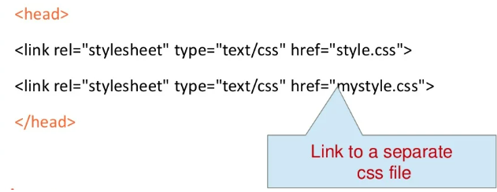

CSS Presentation
Cascading Style Sheets - CSS
Definition of CSS
CSS - is a style sheet language used for describing the look and formatting of a document written in a markup language. you write css rules in elements, and modify properties of those elements such as color, background color, width, border, font etc.
Three versions of CSS exist: CSS1, CSS2 and CSS3.
Syntax of CSS
the CSS syntax is made up of 5 parts:
- Selector
- Property/value
- Declaration
- Declaration block
- Curly braces

Selector
Selectors are used to declare which part of the markup a style applies to.
3 types of selectors:
- 1) Tag selectors (body, p, div, a)
- 2) ID selectors (#wrapper, #sidebar)
- 3) Class selectors (.content, .menu)
*The selector is normally the HTML element you want to style
*Selectors should never start with a number, nor should they have spaces in them
Property & Value
The property is the style attribute you want to change. each property has a value
.png)
*Properties are separated from their respective values by colons:
*Pairs are separated from each other by semicolons;
Declaration
Definition: Each CSS line that includes property and value

*Each declaration consists of a property and value
Declaration Block
A declaration block consists of a list of declarations in braces. Each declaration itself consists of a property and a value. If there are multiple declarations in a block.
Curly Braces
The curly braces contain the properties of the element you want to manipulate, and the value that you want to change them to. The curly braces plus their content is called a declaration block.
How CSS is Applied to a Web Page
There are three ways of installing a style sheet:
-
Inline style
An inline style loses many of the advantages of style sheets by mixing content with presentation.
To use inline style you use the style attribute in the relevant tag. The style attribute can contain any CSS property. The example shows how to change the color and the left margin of a paragraph:
-
Internal style sheet
An internal style sheet should be used when a single document has a unique style. You define internal styles in the head section of an HTML page, by using the style tag, like this:
-
External style sheet
An external style sheet is ideal when the style is applied to many pages. With an external style sheet, you can change the look of an entire Web site by changing one file. Each page must link to the style sheet using the link tag. The link tag goes inside the head section:
You can link a single style sheet to a multiple documents in your Web site by using the link element or the @import element
Cascading order
What style will be used when there is more than one style specified for an HTML element?
We can say taht all the styles will "cascade" into a new "virtual" style sheet by the following rules, where number four has the highest priority:
- 1) Browser default
- 2) External style sheet
- 3) Internal style sheet (in the head section)
- 4) Inline style (inside an HTML element)
An inline style (inside an HTML element) has the highest priority, which means taht it will override a style defined inside the head tag, or in an external style sheet, or in a browser (a default value)
CSS Box Model
All HTML elements can be considered as boxes. In CSS, the term "box model" is used when talking about design and layout.
The CSS box model is essentially a box taht wraps around HTML elements and it consists of: margins, borders, padding and the actual content.
The box model allows us to place a border around elements and space elements in relation to other elements.
- Margin - Clears an area around the border. The margin does not have a background color, it is completely transparent.
- Border - A border that goes around the padding and content. The border is inherited from the color property of the box.
- Padding - Clears an area around the content. The padding is affected by the background color of the box.
- Content - The content of the box, where text and images appear.
An inline style (inside an HTML element) has the highest priority, which means taht it will override a style defined inside the head tag, or in an external style sheet, or in a browser (a default value)